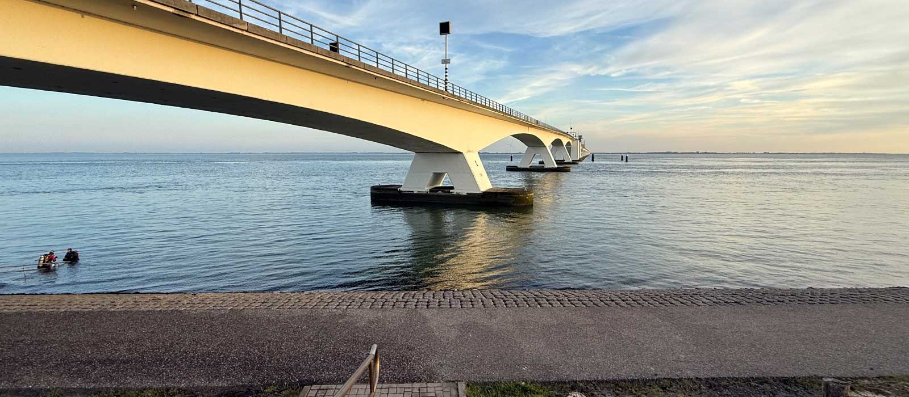

Provinciaal Domein De Nekker, Mechelen
In deze vijver liggen verrassende objecten: een bus, bootwrakken, drie auto’s, een piramide, een kerkhof, een satellietschotel en zelfs een olifant. Je ziet er meerval, snoek, graskarper, voorn, baars en rivierkreeft.
Die echte “Nekkerduik”-sfeer vind je nergens anders.
- Zondag omstreeks 10u00
- Woensdag 14u00 – 17u00
- Donderdag 20u00


Natuurgebied Muisbroek — Put van Ekeren
Beheerd door AVOS, duiken kan enkel met vergunning. Een kaart aanvragen doe je via secretariaat@duikclubneptunus.be.
AVOS-infobord Put van Ekeren →Steengroeves in België
Elk jaar trekken we langs de steengroeves, vooral in de winter: Vodelée, La Gombe, Floreffe, Vodecée, Rochefontaine en meer.
Verantwoordelijke: Harald Beirnaert, harald.beirnaert@telenet.be.


Nationaal Maritiem Park Oosterschelde
Op ongeveer een uur rijden vind je tientallen duikstekken. Elke woensdagavond in juli en augustus, en om de twee weken een clubduik van mei tot oktober.
Organisatie: Marleen Kestens, marleen.kestens@skynet.be.
Interactieve duikstekkenkaartL’Estartit — Medes-eilanden
Badplaats op ongeveer 150 km ten noorden van Barcelona. Het mariene reservaat van de Medes-eilanden met grotten en tunnels is een droom voor duikers.
Jaarlijkse clubduikreis: eind september.

Duik mee met de club
Bekijk de agenda voor de eerstvolgende clubduiken.